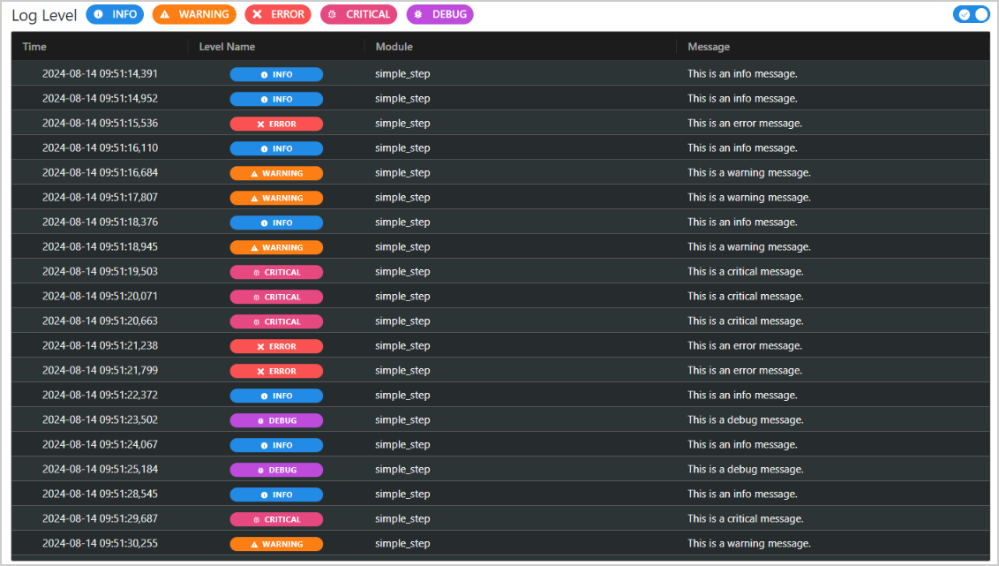
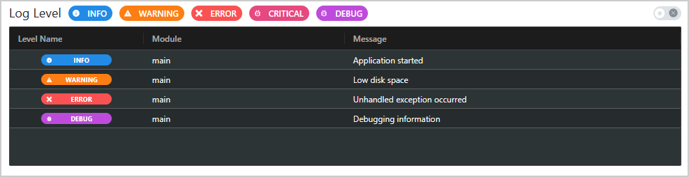
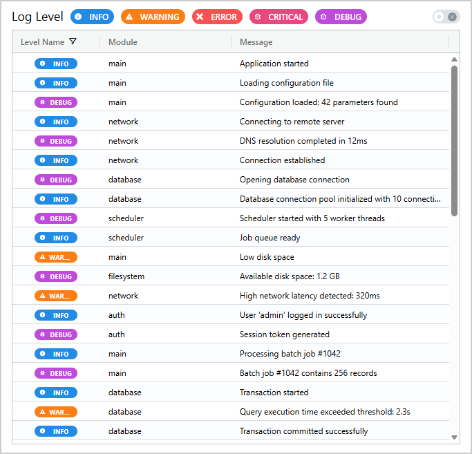
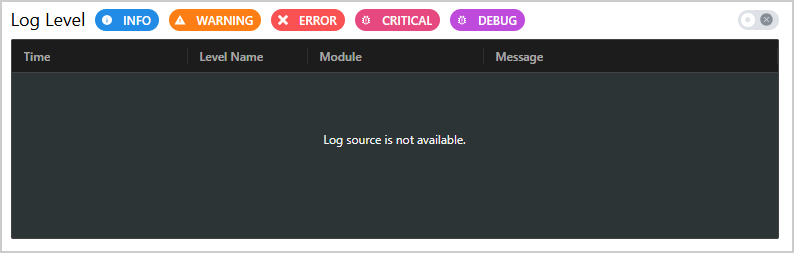
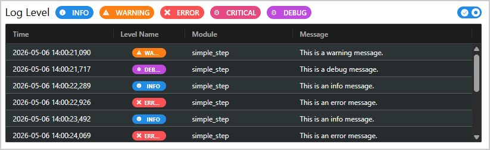

Logs Supervisor#
LogsSupervisor is a Dash All-in-One (AIO) component for parsing and displaying log files
generated with Python’s logging module. It provides an interactive AG Grid table with filtering,
sorting, and real-time monitoring capabilities.
Key features:
Log parsing: Parses log files using a user-specified format string.
Contextual feedback: Displays no-rows messages for missing sources, empty logs, and parsing failures.
Level filtering: Interactive buttons to filter by INFO, WARNING, ERROR, CRITICAL, and DEBUG.
Real-time monitoring: Optional auto-updates to show new log entries as they are generated.
Interactive grid: Sortable, filterable, and resizable AG Grid columns.
File/URL support: Accepts local file paths or HTTP/HTTPS URLs as log sources.
Optional notifications: Can emit persistent
dmcnotifications for parsing failures.Persistent state: Saves filter and column states across reloads.

Usage#
Configure the Dash application#
LogsSupervisor relies on custom JavaScript code to render log level badges in the
AG Grid table. Refer to the Register component assets and add external scripts section of the Getting
Started page for instructions on registering component assets. Specifically, you must:
Add the external script to your Dash app’s
external_scriptsparameterCall
add_super_components_assets()to register the Flask endpoint that serves the JavaScript file
Warning
Failing to include both the external_scripts entry and the
add_super_components_assets() call results in the log level badges not rendering
correctly in the grid. The custom no-rows renderer also requires these assets, so fallback
no-rows feedback is affected as well. Core parsing and row rendering still work.
Basic usage#
Import LogsSupervisor:
from ansys.solutions.dash_super_components import LogsSupervisor
Add LogsSupervisor to the page layout with a local log file path and format string:
def layout():
return html.Div(
[
LogsSupervisor(
log_file=log_file_path,
log_format="%(levelname)s - %(module)s - %(message)s",
aio_id="logs-supervisor",
),
]
)
Assuming the log file contains the following entries:
INFO - main - Application started
WARNING - main - Low disk space
ERROR - main - Unhandled exception occurred
DEBUG - main - Debugging information
The component renders an AG Grid table with columns for levelname, module, and message
and the following output is expected:

Real-time monitoring can be enabled by toggling the switch in the top-right corner of the component. When enabled, the component polls the log file at regular intervals (default: every 3 seconds). To activate monitoring from a callback, refer to the Activate monitoring section below.
Warning
It is critical that the log_format parameter exactly matches the format string used in the
logger’s formatter. Mismatched formats result in no matching rows and a parsing-failed
message in the grid.
Advanced usage#
To customize the appearance of LogsSupervisor, use the width and grid_props
parameters. The update frequency can be controlled with the interval parameter.
The following example sets an update interval of 1 second, a custom container width, a fixed grid
height, and switches to the light AG Grid theme (ag-theme-balham):
def layout_advanced():
return html.Div(
[
LogsSupervisor(
log_file=log_file_path_advanced,
log_format="%(levelname)s - %(module)s - %(message)s",
aio_id="logs-supervisor-advanced",
width="70%",
grid_props={
"style": {
"height": "600px",
},
"className": "ag-theme-balham",
},
interval=1000,
show_error_notifications=False,
),
]
)
The expected output is an AG Grid table with a fixed height of 600px, a width of 70%, and the
light ag-theme-balham theme:

In this advanced example, show_error_notifications=False disables popup notifications for
parsing failures while still showing contextual no-rows feedback in the grid.
Integration with SAF-based solutions#
The following example shows how to integrate LogsSupervisor in a SAF-based solution where
a GLOW transaction method generates a log file. Real-time monitoring is activated via a callback.
Generate a log file#
The following example assumes that a log file is generated in a SAF-based solution in a GLOW transaction method as follows:
@transaction(self=StepSpec(upload=["logfile"]))
@long_running
def generate_random_logs(self) -> None:
"""Generate random log messages and periodically upload the log file as an EntityHandle.
Emits random log messages at the DEBUG, INFO, WARNING, ERROR, and CRITICAL levels for
30 seconds. After each message the current log file content is stored as a new
EntityHandle and uploaded so that listening clients can display the latest entries.
Old EntityHandle files are not explicitly removed here; they are garbage-collected
automatically once the transaction completes.
"""
logger = logging.getLogger(__name__)
logger.setLevel(logging.DEBUG)
# Create a temporary file used by the logger. Its contents will be copied
# into immutable EntityHandle files for upload.
dynamic_log_file = self.storage_scope.get_storage_root() / "dynamic_log.log"
# File handler that writes to the dynamic log file.
file_handler = logging.FileHandler(str(dynamic_log_file))
# Log message format.
formatter = "%(asctime)s - %(levelname)s - %(module)s - %(message)s"
file_handler.setFormatter(logging.Formatter(formatter))
# Attach the handler to the logger.
logger.addHandler(file_handler)
start_time = time.time()
while (time.time() - start_time) < 30:
# Emit a random log message.
index = randrange(5)
if index == 0:
logger.info("This is an info message.")
elif index == 1:
logger.warning("This is a warning message.")
elif index == 2:
logger.error("This is an error message.")
elif index == 3:
logger.critical("This is a critical message.")
elif index == 4:
logger.debug("This is a debug message.")
# Copy the current dynamic log file into a new file and store it
# as a fresh EntityHandle. Files stored as EntityHandle are immutable,
# so we create a new file each iteration.
bytes_content = dynamic_log_file.read_bytes()
self.logfile = self.storage_scope.store_stream(bytes_content)
# Upload the new logfile handle so clients can access the updated log.
self.transaction.upload(["logfile"])
time.sleep(0.5)
logger.removeHandler(file_handler)
file_handler.close()
Note
This simple example generates random log messages for 30 seconds. In a real application, the log file would be generated by the actual application logic, and the component would monitor it in real time as new entries are added.
Due to the way GLOW’s BDM file handles work, a new log file handle must be created and uploaded each time the log file is updated. This is because BDM file handles are immutable, so the same file handle cannot be updated with the new content, but a new handle must be created for each update.
In the current example, the previous log file handles (and their associated files) are not deleted and are left to accumulate in storage until the transaction completes. In a production application, you would want to implement a cleanup mechanism to delete old log file handles and free up storage space. A full implementation of this cleanup mechanism can be found in the showcase example.
Add component to layout#
Add LogsSupervisor to the page layout and pass the log file URL and custom grid height:
def layout_logs_supervisor(step: MyStep) -> html.Div:
"""Layout of the basic logs supervisor example."""
return html.Div(
[
LogsSupervisor(
log_file=step.get_entity_url("logfile"),
log_format="%(asctime)s - %(levelname)s - %(module)s - %(message)s",
aio_id="logs-supervisor",
),
]
)
The expected output is an empty AG Grid table, ready to display log entries as they are generated in the transaction method:

Activate monitoring#
To automatically enable real-time monitoring when a log-generating method is triggered, set the
data property of the activate_monitoring store to True (this code snippet assumes
that a button with ID
generate-logs-basic-button triggers log generation):
@callback(
Output(LogsSupervisor.ids.activate_monitoring("logs-supervisor"), "data"),
Input("generate-logs-button", "n_clicks"),
State("url", "pathname"),
prevent_initial_call=True,
)
def generate_logs_and_start_monitoring(
n_clicks: int, project: SuperComponentsWithSAFSolution
) -> bool:
"""Trigger the generate_random_logs transaction and activate the basic supervisor."""
if not ctx.triggered_id or not n_clicks:
raise PreventUpdate
step = project.steps.my_step
step.generate_random_logs()
return True
As the transaction method generates log entries, the component automatically updates to display new
logs in real time. The monitoring continues until turned off by setting the store data value
to False in a callback, or by toggling the switch in the component’s UI:

How it works#
Initialization: The component parses the log file using the provided format string
Display: Log entries are displayed in an AG Grid table with columns based on the format attributes
Filtering: Click the log level buttons (INFO, WARNING, ERROR, CRITICAL, DEBUG) to filter by level
Monitoring: Toggle the switch in the top-right corner to enable or turn off real-time updates
Auto-update: When monitoring is active, the component polls the log file at regular intervals (default: 3000 ms)
Persistence: Filter settings and column states are preserved across page reloads. When the component is re-initialized with a different log file or format, all filters except for the log level filters are cleared and the real-time monitoring is switched off.
Feedback states: The no-rows overlay message changes based on parse status:
No logs to display.when there are no rows after a successful parseLog source is not available.when a local file or URL source is missingCould not process log. Please check the log file path and format.for parse failures and non-matching formats
Filter logs#
The log level buttons at the top of the component can be used to filter logs by severity:
INFO (blue): Informational messages
WARNING (orange): Warning messages
ERROR (red): Error messages
CRITICAL (pink): Critical error messages
DEBUG (grape): Debug messages
Click a button to toggle that level on or off. Multiple levels can be active simultaneously.
Toggle monitoring#
The switch located at the top right corner controls real-time monitoring:
ON (blue checkmark): Component automatically updates the table at the specified interval
OFF (gray X): Monitoring is paused; table displays the current snapshot
Note
It is recommended to turn off monitoring when log generation has stopped to avoid unnecessary polling and API requests.
Properties#
Constructor parameters#
Parameter |
Description |
Type |
Required |
|---|---|---|---|
log_file |
Path or URL to the log file to be parsed. Supports local file
paths (as |
str or Path |
Yes |
log_format |
Format string of the log messages. Must exactly match the formatter used in the logger. See the Python logging documentation for available format attributes. |
str |
Yes |
aio_id |
The unique identifier for the component. If not provided, a UUID is generated. |
str |
No |
interval |
The interval in milliseconds for auto-updating the log messages
when monitoring is enabled. Default: |
int |
No |
width |
The width of the component container. Can be a CSS string (for
example, |
str or int |
No |
grid_props |
Dictionary containing properties for the AG Grid component. These properties are merged with defaults. See Dash AG Grid documentation for available options. |
dict |
No |
show_error_notifications |
Whether to show |
bool |
No |
Supported log format attributes#
The log_format parameter supports the following Python logging format attributes:
Attribute |
Example Output |
Description |
|---|---|---|
|
2024-01-15 10:30:45,123 |
Human-readable time when LogRecord was created |
|
1705315845.123 |
Time when LogRecord was created (Unix timestamp) |
|
my_module.py |
Filename portion of pathname |
|
my_function |
Name of function containing the logging call |
|
INFO |
Text logging level for the message |
|
20 |
Numeric logging level for the message |
|
42 |
Source line number where logging call was issued |
|
This is a log message |
The logged message |
|
my_module |
Module (name portion of filename) |
|
123 |
Millisecond portion of creation time |
|
my_logger |
Name of the logger used to log the call |
|
/path/to/my_module.py |
Full pathname of source file |
|
12345 |
Process ID |
|
MainProcess |
Process name |
|
1234 |
Time in milliseconds since logger was created |
|
67890 |
Thread ID |
|
MainThread |
Thread name |
|
Task-1 |
Task name (Python 3.12+) |
For complete details on format attributes, see the Python logging documentation.
Grid properties#
The grid_props parameter accepts any valid Dash AG Grid properties. Default properties include:
{
"rowData": [], # Populated from parsed log file
"columnDefs": [], # Generated from log_format
"defaultColDef": {
"filter": True,
"resizable": True,
"sortable": True,
"editable": False,
},
"filterModel": {},
"dashGridOptions": {
"noRowsOverlayComponent": "DMC_NoRows_Overlay",
"noRowsOverlayComponentParams": {"message": "No logs to display."},
"suppressMovableColumns": True,
"tooltipShowDelay": 500,
"suppressScrollOnNewData": True,
},
"className": "ag-theme-balham-dark",
"persistence": True,
"persisted_props": ["columnState"],
"style": {"height": "200px"},
}
User-provided properties are merged with these defaults.
Component IDs#
The component exposes the following IDs for use in callbacks:
LogsSupervisor.ids.info_button(aio_id): INFO level filter buttonLogsSupervisor.ids.warning_button(aio_id): WARNING level filter buttonLogsSupervisor.ids.error_button(aio_id): ERROR level filter buttonLogsSupervisor.ids.critical_button(aio_id): CRITICAL level filter buttonLogsSupervisor.ids.debug_button(aio_id): DEBUG level filter buttonLogsSupervisor.ids.activate_monitoring(aio_id): Store that controls when monitoring starts/stops (bool viadataproperty)
Limitations#
The
log_formatstring must exactly match the format used in the logger’s formatter, or parsing does not return matching rows.Real-time monitoring continues until manually turned off. It does not automatically stop when log generation completes.
Only the format attributes listed in Supported log format attributes are supported. Custom format attributes raise a
ValueError.A
dmc.NotificationContaineris required only whenshow_error_notifications=Trueand you want parse-failure notifications displayed.
Full example#
For a complete working example check out the showcase example.
The example shows:
Triggering a long-running transaction that generates random log messages at multiple severity levels for 30 seconds
A default supervisor using only the required constructor arguments with a 3-second polling interval and the dark AG Grid theme
A customized supervisor with a 1-second polling interval, a fixed width, and the light AG Grid theme
Both supervisors listening to the same log source and activating supervision via a shared callback
Managing the trigger button loading state via callbacks and re-enabling it when the transaction terminates
For a minimal self-contained runnable example, see the Logs Supervisor page in the Examples gallery.
Source code#
For the full API reference of LogsSupervisor, see
LogsSupervisor.
Check out the component source code to discover the underlying logic. Contributions are welcomed. You can extend the component functionalities by raising a pull request in the super-components-for-dash repository.